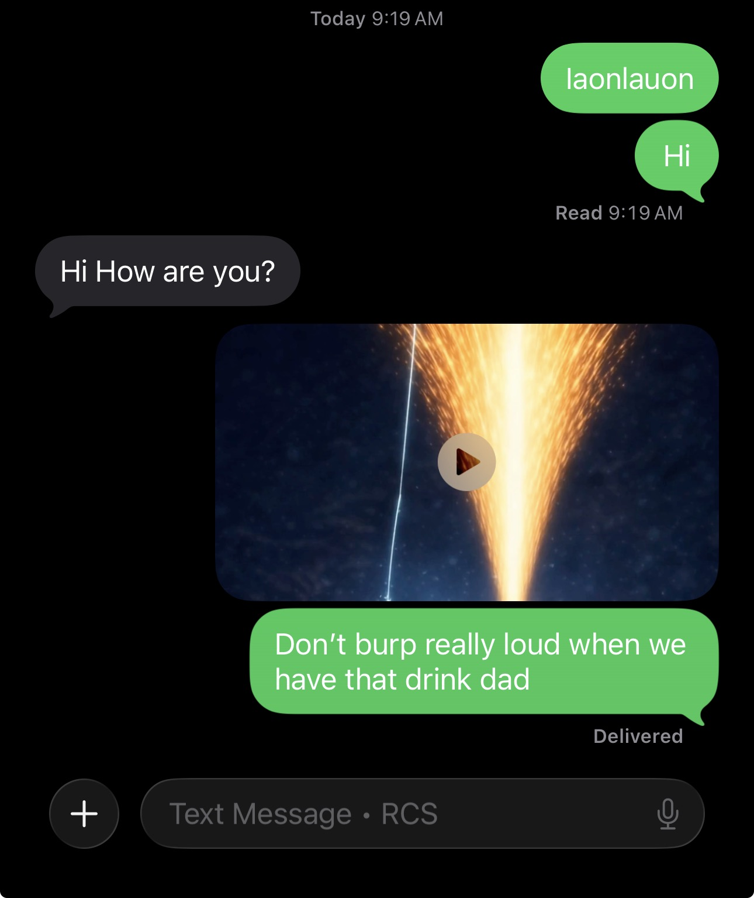
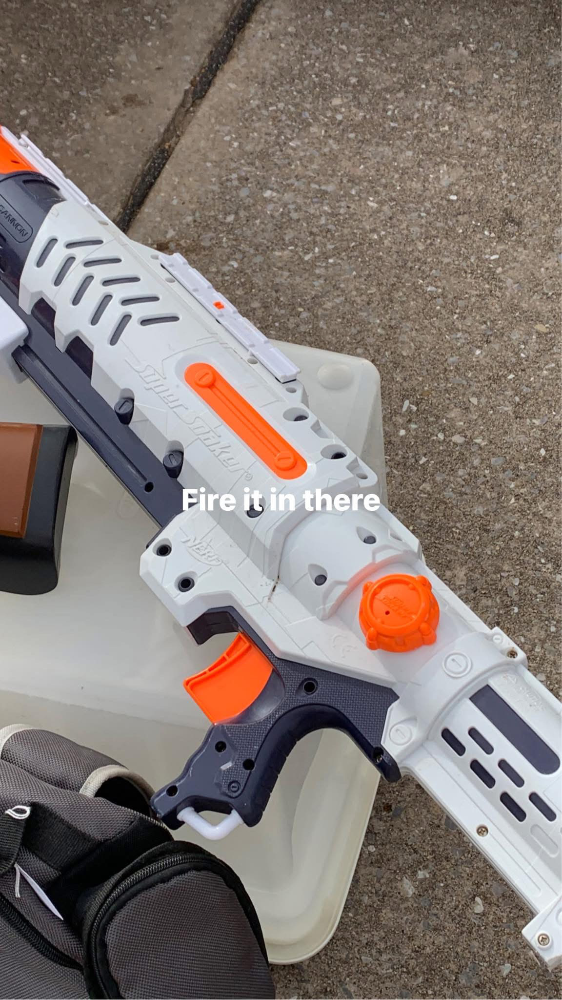

Using Aitubo Instructions
Instructions:
After each line is a line break
and make it a Riddim dubstep song
with a high raspy female voice.
Don’t rest between lines or during
vocals always have instruments
playing even during vocals.
Lyrics:
Attitude on ice now I’m not nice
Im the one who owns the ice
No one matters more than I
That was at the poker nights
Super old dad that’s highest
And I who’s super mad Aligns
Now holds dad on the insides
Of an American flag. Why is
Say to a coin there is two sides
Who leads a country is hypnotized
Who gives away their own rights this is
Called the American by the look of the chip
On my shoulder and from the internet
Called the American by the look of the chip
On my shoulder and from the internet
Called the American by the look of the chip
On my shoulder and from the internet
Called the American by the look of the chip
On my shoulder and from the internet
Attitude on ice now I’m not nice
Im the one who owns the ice
No one matters more than I
That was at the poker nights
Super old dad that’s highest
And I who’s super mad Aligns
Now holds dad on the insides
Of an American flag. Why is
Say to a coin there is two sides
Who leads a country is hypnotized
Who gives away their own rights this is
Called the American by the look of the chip
On my shoulder and from the internet
Called the American by the look of the chip
On my shoulder and from the internet
Called the American by the look of the chip
On my shoulder and from the internet
Called the American by the look of the chip
On my shoulder and from the internet
It took me about an hour to start living today.
I put on my watch and that’s when my Facebook
post that I made before bed said-
Wow look at that… it’s a….. Vegas Matt
Wow look at that…it’s a….. Grand Jackpot
Keep pointing fingers haha
I Comment on my post
“Now if only I could get nana to show someone
else so I could watch my nana watch someone
watch Vegas Matt watch wbg get a a grand jackpot “
This kept me alive. It made my watch I wear on my
wrist live. I was walking like the world was mine
as I left the house after I put on my watch.
Definitely a way to keep our dating alive.
I wasn't alive for maybe an hour after that until lunch.
I had a doctor's appointment. It started being live
again when it was a good atmosphere with piano and
comfy seating with tomato bisque. It became alive when
I found a peace tea that was like the blue scooby snacks
because that’s a really good flavor and I had wanted a
peace tea since middle school. This was perfect for our
date because we did something that I always wanted to do
and it was great. Then we played autumn moon right after
we had our lunch and that was romantic because it’s a
part of us or kind of our game too so we could feel like
we’re at the highest of earth. Nana gave us this problem
to solve about a robber and I found it romantic. Simple
things can be heavenly as long as it’s exciting enough.
A car hopper stole from Poppies truck and I had ideas on
how to catch him. We started listening to Eminem and his
balance of starlights happened because of my Facebook post.
hich has a lot of pointing in it from the night before or
earlier that morning or last time I had gone outside.
Then on our way home I said I love the sun because I was
thinking about it cleansing everyone since I was sad
about our spirits being in hell. Who knows maybe we’re
separate. So what I said about the sun kept Eminem's
balance of starlights going since they happen every time
I listen to Eminem. Also every time I went outside it
built an ice castle. This time I went outside. It was
time for the starlight. Then I got home and nana said
she wanted to listen to something more peppy so I played
super fly where we got some time. Or sun time. The lyrics
were about the sun. All this kept our date going.
Not sure where all the stuff that happened went
I checked everywhere. I know I survived somehow,
today I told myself well I guess it’s
been pretty live today. I haven’t said that in a
while so it opened my eyes to say maybe that day was
on the game because we had woke up and vegas Mat was
failing in the question of the day. I had said that
he’s keeping it stacked just before that happened.
I leaned over after cooking and saw he was playing the
bingo game and I said “he’s keeping it stacked”
because the bonus was lasting awhile. Then after that,
he failed the question of the day and I kept it
alive and he was playing the only game that
Nana ever plays and he never really plays that.
We went to Nana‘s and I did Granola samples where
I did kind of like a bingo putting the lids on and
that I messaged Johnny and it was 4:20pm in and 9:15pm
out. 420in and out means life and death. Since this was
during the packinalimo and diamond like sample cups.
It kept the stacks alive. Since daimonds is what the life
was at the time and the time in and out was also
a life move.
Craig Rochelle was saying if she lost something try to find it or something
like that so I asked Nana if we could go find this piece of trash that I
lost five years ago she kept pressing me about it, so she found out the
truth that it was the Fake leaf I found on the sidewalk, but I wrapped
around my finger before I married an angel five years ago we stopped by
there, and by the time I got home I was divorcing my angel because she told
me we are not married over and over so I let her ruin everything that I’ve
been working for literally investing my entire life in and then I had messaged
Masha “dman” I think it was a stan technique. Then I sent her a meme that says
“ sir, put me down. I am the manager,” the cat wearing a tie, and that was a
reference to what I said before the picture. I realized the message I sent
before dman was from 4/22/20 and a photo of an emerald. So this happened as
I was divorcing her so it gave life the the failure of marriage. I watched
the daft punk fortnight concert and it started with human robot song and it
sound like urmaried robot. So yeah we saved the marriage that afternoon.
I was counting my loses around this time for all of packinmylimo
and I don't remember ever having one. I'm finding times of life
in my records that jog my memory of more life. We did more granola
samples and I did the baby dragon move again in our messenger. It
was 61 9 PM with the time of 234 which is perfect because it has
6ix9ine and death happen together and after that the little Fortune
won the million we had good dinner and after that we went to we
watched that funny sonic show on YouTube.
An orange girl that was a part of my day reminded me of the wife.
My table had just gotten an orange pumpkin. I picked the color
before this happened. I put a card that reminded me of the wife by
the pumpkin. It looked like an orange chick. We started eating
orange peppers in the salad. So now the salad has orange colors.
Since the store was out of celery. So October reminds me of orange
and that just started. So this brought our date alive then we went
to Scissortail to sell granola and we could see the Omni hotel by
the Devon Tower so we started to kind of live some more and then
it was time to do the samples just before I start the samples I
saw some food t graters as architecture, and I thought of the greater
than symbol as I was doing the granola I told Nana I am the granola
man. She said you’re the man. The man sounds like daimond and that
combined with the greater than symbol lets us live as packinmylimo
exits the streak that day.
i was listening to music that put me in a duel state. I haven't dueled
in a long time. Thats when I was pulling my atovaquone out that i had
splattered everywhere the day before. This splatter reminded me of the
degal blast. I immediately placed a yellow straw which reminded me of
the yellow line that had a red line happen after. That's when I thought
of strawberries. I had been drinking strawberry milk for once the past week.
Guy is meditating about to enter square one at the park. He is going to make the space about a sideways line. Square one
is the start of a space before he goes he uses a card from his collection that gives him the power to duplicate
Then he goes to another guy meditating within another guy meditating within another guy working at a job. He collects
posts on his page and while he is at work he is creating a new post in his head. He had made a new band name right before
he wanted to post something he called it tear owt it was a cross between arrow and tearout dubstep. He got the idea from
his old band name that was good and also combined the genre & music senses effortlessly. Using that old name he made the
new name. He posted about the new band tear owt and that name is going to be the sideways line because it looks like
an arrow.
Guys meditating about the worker stops and he goes to a doctor's appointment. On his way out throwing away trash. He drops
a Greek yogurt and splatters all over the ground in the dark to look like stars and he’s dressed in all white. This
implies a hazmat suit lab look that is common with balancing up to above the stars and especially in all white. He heads
out with his green thing and goes to the doctors appointment drives in a square between appointments cause they stopped
for lunch after between appointments since the appointments are right next to each other, and he kept the surgeon balanced
because he remembered to wear the right clothes and it seemed magical because he almost forgot to do it and the guy that
was working gave him an idea that influenced him to remember the outfit. The only thing he took with him to the doctors
for once was the green tube thing that will be the sideways line.
Guys meditating about the guy that went to the doctors office gets up and says OK time to start a square one. On his way
out to the park he looks at a wall cloud of babies and says what is headed our way. He sees what had just happened
recently, how social media survived with my song moon boom that entered the space of breaking the law that looked like a
binky and a dragon. Also the spin moves I was doing on the circular helipad in a small circle within that so it was like
a binky shape.
Then that all the stacks were topped off with the baby dragon. The guy points at a wall cloud type thing of babies says
what is that headed our way when the bass drops there’s a finish line that crosses over our heads and the guy has a
camera circling goes to his knees and slowly down to his to a crawl begins morphing into a baby because he is hit by death.
He was just walking into the park where he was going to start space one and he hit a wall before crossing the street that
causes the finish line hit because he couldn't continue the stack of caduceus. Chaos control, being a baby or crawling,
and crawling from Labor Day. All ofl that once he gets to the square the doctor trick comes together as another chaos
control.
This happens on our wedding day so the story is we dropped to our knees after a very long mountain climb finishing our
lap. All of the stacks have been topped and ready for chaos control. In sonic lore and from our first lap, chaos control
washes over the universe and happens when all the stacks are topped after a long climb where it is cold and very hard
to survive because of the amount of stacks without failure being everywhere. Chaos control forms when all of the tops
from the stacks are collected, also forming the master emerald. The master emerald is the largest stone in existence
fictionally to my knowledge and non-fictionally as an imaginary idea in my life. Polika deserves the biggest stone for
her wedding effortlessly as it is said a bigger stone the better. I never thought it would ever get that cold again since
the first chaos control in 2022 and it seems like this freeze at the end of this lap we took could have been for her a
lot of ways. We went to the lake September 6th and it has been on ice/untouched. The water sparkled in ice and since the
water expands over the land it represents chaos control. I wanted to keep the diamond / baby dragon a secret because I
hadn’t exited the stacks yet and I might take another lap. I pre made this entire story to give to Polika on her wedding
day.
He reaches square one at the park then imagines zooming out to two spaces and these are stacks or spaces.
Within them is the square one.
Square one morphs from dead into the word surviving because it survives.
Of the two spaces one space is chaos control because we are entering the space of chaos control that happens rarely
because of the secret (diamond) that is being formed. Since before moon boom was the only thing left on social media it was
the video where Haydn fights for his own redemption. Where a ball expands over the earth. The Lake thing happens and now
this. The other space is the social media accounts that were recently wiped out but since moon boom gave the baby
dragon/diamond to its space it is still standing. He looks down and there’s when the doctors' sideways line, square,
suit, and stars align since that happened shortly enough before entering the square thats made of everything but it was
originally for a new stack about the sideways line. As it merges he looks up at the past and there’s like an upside down
castle or mountain peak, but it’s a bunch of stacks coming down to just two stacks and zooms out on the hourglass shape
of time and stacks. It shows the death bottom neck where he’s at and says you are here. Why doesn’t it after the
bottleneck count as survival? Why isn’t he going into survival? This is because there’s a secret there and then the secret
space appears below square one. You can see in real time where the end point of the castle is freezing to death.
The secrets enter the space where my latest Facebook post, Jsir Kwed (Looks like the word Secret and Wedding), and the
secret of the lightning bolt are. In that page Jsir Kwed is a caduceus and a wedding. The secrets are stacking and we
achieve the caduceus through Jsir Kwed also since a caduceus reminds me of lightning.
Extra stuff -Past self “ I could probably get this done by the time I get my ring and use this for the wedding.
I put my suit on and read this to myself in the mirror and head to a classy charity event marking our anniversary.
Well our second one because this isn’t the first time.
I was at church and they were giving out grapes before it started. I folded up the cardboard I was holding and
wanted to raise my hands because the guy said to. Even though I was sitting down and not singing because I
thought it was fun. I raised my hands, and there was my folded up cardboard thing that held the grapes. My
fingers covered up enough of the rectangle to make a square. This connects to the kahm from the Jesus
Redemption story.
I was going to bed and right before I did since Poppy was here. It started to stack. I deleted Facebook and
Instagram because I couldn’t control myself. I started scrolling through my photos and there was this
video of Poppies birthday with a layered circular cake and I was in the background above the cake in a
way in the distance kind of. Put my hand in the middle of a frisbee for the dog holding it up. I had
aligned with above the cake. I wanted to go in my room, but I wanted to be honest about my stack so I
didn’t forcefully go to my room. As we started to lose control, we didn’t quite do that because then
the thunder came on TV and I said Johnny was there today. We talked about the loss of our team today
and the MVP was saying we needed saving. This seemed to kinda connect with what just happened with the
cake that I had sent to my poppie. By then I had finished what I was doing. I got up and unplugged my
iPad from Poppies side table. I was balancing a towel on my head. This seemed to kinda keep the tower going.
So it was time to stack the tower. since my phone was about to die and I was doing hand exercises. I was
talking to poppie about buying stock. He said look into silver mining earlier so I used magic and picked
cde. I mentioned it and I asked him what he bought his stocks at. He zoomed out where it was a steep
peak on the stock. Then I went to bed. So this cde peak kept it going.
I was making my video and wondering how doge is going to align with the sun in my video. That’s when
I realized the coliseum was sun colored. I went outside and could see the angel in the sun fighting
for us. I went inside poppy had said that’s Haydn’s flashlight earlier. I started playing with it.
Alive (nightmare) played w the chorus when I shined the light
So it was bedtime and time to stack the ice tower. I had just been on a scene where the angel kind
of looked like she was climbing a rope. I was struggling with the scene trying to get her off
the rope. Mrbeast games season two had just played something about a stacked tower and climbing
a rope but it wasn’t in the time and space. I would say my scene would have kept us alive since
that’s the last thing I was looking at before going to bed. I was going into my room and I was
going to take the life instead of the trick because it looked jewy. Then nana left without me
to help my uncle. I heard her say where he was but it didn’t process he was at oncue. I kept
going to bed but nana came back. So I went out there and a song by kid kudi (Judy? Jewy kudi?
It autocorrected kudi to judi. Amy rose has kind of been a thing1. I had just realized my
Facebook has any in the riff raff tropical vacation and the any comic before that. I didn’t
realize he had a hammer until now. Vegas Matt had been a judge too. Some chick on eBay auction
is my style judgy? Anyways to I went with nana. She asked me about my light up speaker I said
it’s my boss it tells me what to do. She asked me like what and I said before I got in the car
it was going “nana hey nana hey” by kid kudi. So I played places by edenbrook. Then we passed
this car lot called super center. I never realized it was there by my house. I said “that won’t
be the last time you hear about that place”. She asked “why” I said “that’s what’s gonna keep
us alive going to this oncue.” Since that’s where my uncle was and the oncue stack has become
super moves. So I eventually got back home and started going to bed. I knew I was going to
survive the ice tower. That’s when I realized something else might cross over here. Then I
realized the Jew death just happened because I had never used a Jew before with my eyes open
to it. This makes the Jews in my life finally pay off because they have the chance to die
correctly. Now that Jews can’t die I say “I didn’t think I could get any stronger but I did”
this is where the spirit water comes in. Need more heaven? Well you already know there’s a Jew.
Up up and away by kid kudi. After about 30 mins the death of respect for Jews might happen
considering not having respect was stumping me. I say I got that lorecanon Jew cannon buiding
max castle here castle there ez if you need more convincing picture this how does Jew never die
until now it’s supposed to happen. And how did the Jews respect survive last second? If you
don’t know me, I’m that guy that will absolutely take a loss not saying it’s happened yet.
This unravels all effort in the castle into truth from the past and future.


Space needs a super move and blue jewel. Oncue has super moves in its space and
Since its time for the spirit water from the tower I hinted to him by sending
the burping fish. That kept the blue jewel alive. I used my magic to write the laonlauon
I looked at one of old insagram accounts and the first person in my feed was all grown up now.
She captioned her photo "We're all gown up" the next photo was a photo by pepsi captioned
new year new you. I suppose I can relate because Polika came out new years.I thought I
wasn’t influenced until the Pepsi post. That’s when I realized the progress I’ve made since
Christmas and how we becoming free. That’s when I realized if the pattern is correct then
the Lorcanon is realistic because that’s how it was after the first super move.
So I woke up and there were guns that shot me before I woke up. It reminded me of ego death
being used against me. It was a hard pill to swallow for a second then I heard the tv say
something I don’t remember what it was. It made realize I need to take my loss like a man.
I kind of let it kill me. I went to the back door and looked outside. I realized this is
actually relieving. I didn’t like being the only person with an ego. Even if it’s was some
Jews or whatever that hit me in my dreams. I think they deserve to live. If anything this
new lorcanon kind of makes everything back to normal even before the ice but ice is still
an option. Drink up! What’s a death without a cold? I’m saying cause it’s been pretty cold.
I watching rotating animals on instagram where they have funny videos of animals and the daft
Punk song in every video. After subscribing and watching every day i got this idea.
Jew cannon+amazon prime+roatating animals from instagram or around the world by daft punk
Around this time of year the master emerald might die. I can see it from the jew cannon
since it gives me the same amount of power with minimal effort that took a universe
and it’s time to grow. So if I didn’t like something the Master emerald/ Light made me
do. I could use my knowledge of how to beat it and the jew cannon to beat it instead of
having to let the universe grow me a way out. In a clean house we see knuckles at the
angel island. I am going to show you how the truth outweighs the jew cannon. This is also
when the ego death weighs on me again. Since the jew cannon would be beaten by the truth
and my ego death weighed on me when this jew cannon was created. So the light is saved
because I accept its death but the time of year, knuckles, and what happens around this
time of year. This instance was meant for the other master emerald death that was during
June 2025 but it was for this moment too because I was writing for the future for valentines
day. The time frame for it to count is the largest in all of what I make. I was not expecting
for it to die again here but I did accept its death immediately when I realized this on Jan 14
because of the jew cannon. Then I realized the video I had for Christmas 2025 could be used for
April 1st 2026. This was a trickshot using the videos to trickshot the valentine's day video
into this space because I can tell when my mind is being manipulated by magic to help this light
live. Va ntimes Day 2026 is about the light and red which is what was needed to save the light there.
Listened to eminem and my ipad was paused on polika sprinkling stuff from the ice arrow in space.
I was working on something where i had to review the video. I was putting the video into words
for an ai bot in my new website.
Last night, I was thinking to myself as I was watching Ray William Johnson. The video was titled Remember
this doctor, he finally got caught so I looked over the video and I can’t remember exactly what
influenced me to have this idea with how much magic is involved. I doubt that there was anything out
of the ordinary so I’d imagine it was only magic opening my eyes at the time so at this time I had realized
that when I had told myself January 2021 that I might be able to make it out of this hell if I could have
this lightning bolt for a long period of time. This means that I am in much deeper trouble than I realized
because after I had told myself that in 2021 I went to hell for a long time. I never realize that and I
thought that I told myself that after I had been in hell for that long time, I went to bed knowing I’m not
gonna have all the answers and it’s gonna take a while to figure this out so I woke up and then as my morning
was progressing my eyes were opening to possible solutions. It all started with before I went to bed when I
told myself why is this happening now and why is heaven happening now as well I wonder if having responsibility
of heaven came with the burden like having to carry God‘s burden to keep the castle alive at the beginning of
February to the middle of February in 2022 or 2023. To catch you up to speed I was going to destroy the castle
because of the pain god brought onto the people but then gold light was created to purify the people into
forgiveness along with the other effects of the light. I say when this happened because it was around this
time of year every year or so something like this might happen. Whenever I woke up, I realize that, first being
influenced by my eyes being opened to the mistake I made, thinking I could make it out of here, second seeing
the similarity to God‘s burden. Third, realizing the death of heaven in a way during the same time as the
February deaths, fourth I had immediately gone to the parking lot where I don’t usually go to meet customers.
So I could buy these Pokémon cards that were out and a good deal. I sat where I was given the sun or so I thought
in 2020. I had been denying a lot in 2020 and I was influenced by the sun in this spot in the parking lot to keep
the castle alive back then. Lastly, around the third circumstance, I had told myself if only we had a piece for
all during Naruto Shippuden probably when sakura was removing the poison from the puppet master she says drink it
all. Edit*This must be so everyone could participate. I wasn't sure what else this could mean because I had a hard
time understanding after reading this again. After I had gotten home from the Pokémon cards, Facebook had a guy
from the quantum meme, saying something about cracking knuckles as I was chewing on grape skin. I also think that
it is important for future reference if I’m ever interested in what was influencing. That heaven and the opening
of my eyes had influenced me to remember God's burden. The answer to this death of ascendance/heaven was the sun,
time of year, and all. I thought of it as a large life to this death instead of a smaller super move (the emerald and death).
So it's like the light/master emerald, death from time of year, and all for everyone. What this does is preserve
what it takes to escape hell though time spent in regular life before the bigger hell gets accounted for. What
this looks like is half of a day worth of breathtaking torture being able to be beaten by the towers ascension moves.
So that a lifetime of regular life spent without breathtaking pain for too long could allow a person to ascend
by the end of their life instead of thinking they descended in an unrecoverable hell far below all of the stars
from even a brief experience of a lot of pain. This death was going to make us realize the 4 months of breathtaking
pain was going to take at least 120 lifetimes without that pain at all to recover from as long as the tower's
ascension stands for regular life. So after we survive the death that 120 lifetimes is shortened to one for the 4
months of pain (120 hours).
https://drive.google.com/drive/folders/1WkiENAV0OioVPpE8oT3uVvHfvsWlASTY?usp=drive_link
Swaginabag
Ihadnur uends
Iausn
FASHION
Suit trick using common clothes- Button up shirt over another shirt and leave the top buttons open. Use a black and
white color scheme even with a black and white hat.
Joke-Using a hat with spikes and twisting the spikes when someone's asking for something. It is supposed to remind
them of the south park episode where the cable guys wont help their customers so they twist their nipples and say
yeah no I dont think so yeah no
OTHER
Looking for things I found instructions for a tent with the symbols X X looked like a thing I did. The thing I did was
to save a butterfly. Setting paper against the cabinet to look like > to keep the butterfly in that spot. This was in
a camper so it is close quarters. To the right of me is the piece of paper on the floor that looks like <. Then on
my left is a table that had my longboard standing against the table, matching pencil, and a slice of cheesecake
from right to left. This made a diagonal then the cheese cake w/ knife made the other side of the <.
FOOD
Including a large dead butterfly on the plate example:cheesecake with dead butterfly
PROPOSAL
Ferris wheels will sound like will you marry me. A picture of a girl I was into looked like she was with a ferris wheel.
It looked a lot like her and it was on a magazine cover. I had some tricks that connected to a card on the ground
about minecraft. The tricks that connected had the topic of “mine” and “indie games” so she'd be indie mix or in
the mix of this proposal. The trick was something about an old indie game Total Miner. I went to the field, got a
few strands of hay. I was flattening one that looked bright gold and I made it into a ring
All music streaming platforms @Glistening House
So I noticed there was something when I was watching the mantequilla south park episode.
When butters was naked everyone praised. (I couldn't find my towel so I didn't wear clothes)
I started using butter
Then at the end of the episode when they praised the tornado siren began.
The word Naruto made to look like the word Magic

Now on all music streaming services
Using effort I pretend to talk about a space launch from Space X that is visable from the beach.
The weight of the seal on the ego & envy seemed to prioritize others feelings. I took the loss
for once and let go of using the deagle so much. The family walked down to the beach and I
brought the starlight from the Space X idea. I had made an ego,envy,and death before this beach
castle encounter. So this loss from the seal combined with the Space X combined with the ego move
gives life to the failure from the seal. Since Space X is a seal move because twitter used to be
A seal move (logo). The only effort I put into this was for the starlight.
With effort I found an old photo of the horse shape. Then I thought of a reason to post it
and since I like to say fire it in there. I'll pretend I found the photo and posted it before stepping
on the beach to stack.
